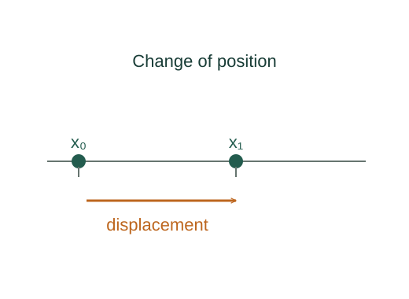

Derive Galilean relative velocity and acceleration
The displacement from A to P equals the displacement from A to B followed by B to P.
What the symbols mean
𝐫PA: position of particle P from origin A; 𝐫BA: origin B measured from A; t: shared Newtonian time.
When this applies
Nonrelativistic mechanics, aligned nonrotating axes, and constant relative frame velocity for the acceleration equality.
Developing the argument

Join the position vectors
The displacement from A to P equals the displacement from A to B followed by B to P.
Differentiate using a shared time
In Galilean mechanics both frames use the same time coordinate. Differentiate each position vector.
Differentiate again
If B translates at constant velocity, its second derivative relative to A is zero.
Identify the limit of the model
Rotating frames introduce additional acceleration terms; relativistic frames do not share a universal time coordinate.
A closer lookHow are velocities combined relativistically? ↗A worked example
A train moving east at 20 m/s and a passenger walking east at 2 m/s give a passenger ground velocity of 22 m/s.
Derivation behind this calculation ↗A point to keep straight
The acceleration equality requires nonrotating frames in uniform relative translation.
Check the assumptions and derivation ↗